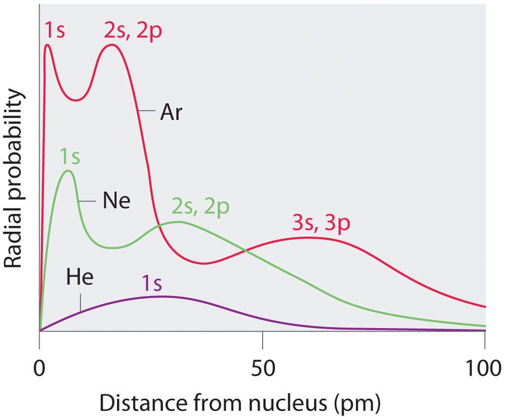
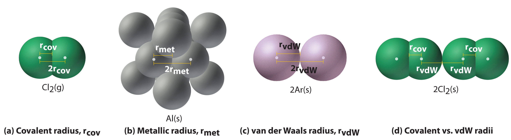
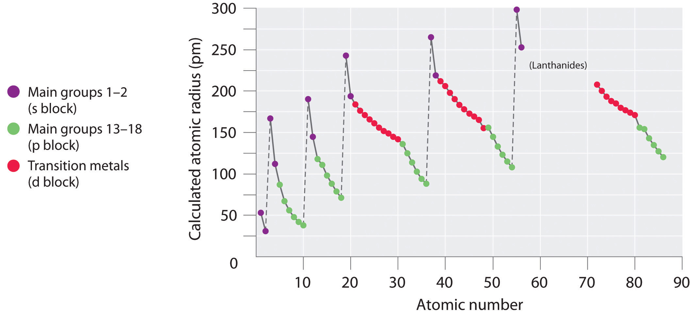
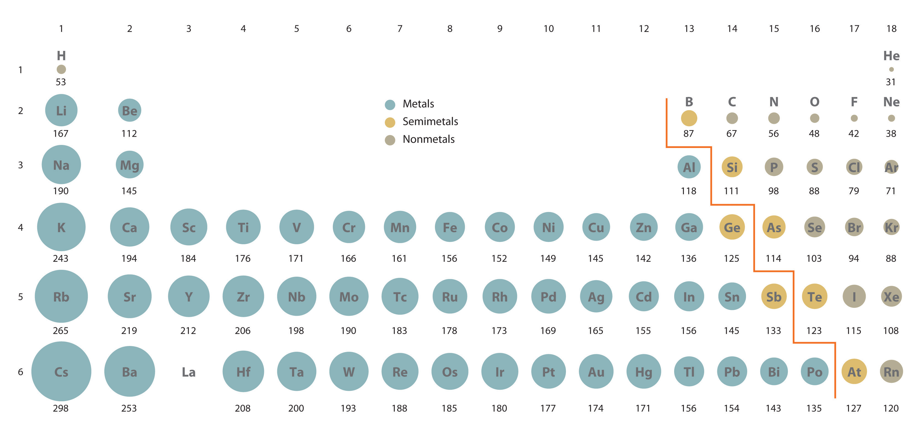
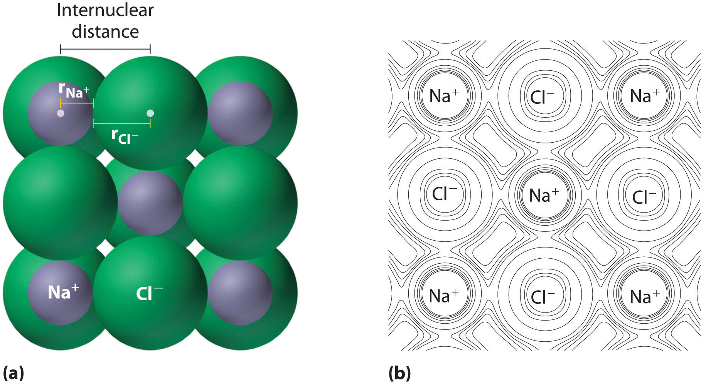
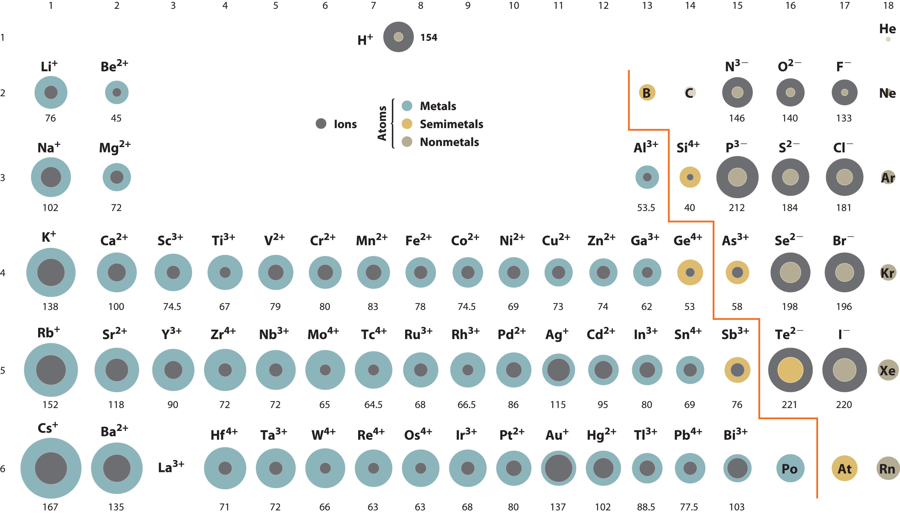

Although some people fall into the trap of visualizing atoms and ions as small, hard spheres similar to miniature table-tennis balls or marbles, the quantum mechanical model tells us that their shapes and boundaries are much less definite than those images suggest. As a result, atoms and ions cannot be said to have exact sizes. In this section, we discuss how atomic and ion “sizes” are defined and obtained.
Recall from Chapter 6 "The Structure of Atoms" that the probability of finding an electron in the various available orbitals falls off slowly as the distance from the nucleus increases. This point is illustrated in Figure 7.4 "Plots of Radial Probability as a Function of Distance from the Nucleus for He, Ne, and Ar", which shows a plot of total electron density for all occupied orbitals for three noble gases as a function of their distance from the nucleus. Electron density diminishes gradually with increasing distance, which makes it impossible to draw a sharp line marking the boundary of an atom.
Figure 7.4 Plots of Radial Probability as a Function of Distance from the Nucleus for He, Ne, and Ar
In He, the 1s electrons have a maximum radial probability at ≈30 pm from the nucleus. In Ne, the 1s electrons have a maximum at ≈8 pm, and the 2s and 2p electrons combine to form another maximum at ≈35 pm (the n = 2 shell). In Ar, the 1s electrons have a maximum at ≈2 pm, the 2s and 2p electrons combine to form a maximum at ≈18 pm, and the 3s and 3p electrons combine to form a maximum at ≈70 pm.
Figure 7.4 "Plots of Radial Probability as a Function of Distance from the Nucleus for He, Ne, and Ar" also shows that there are distinct peaks in the total electron density at particular distances and that these peaks occur at different distances from the nucleus for each element. Each peak in a given plot corresponds to the electron density in a given principal shell. Because helium has only one filled shell (n = 1), it shows only a single peak. In contrast, neon, with filled n = 1 and 2 principal shells, has two peaks. Argon, with filled n = 1, 2, and 3 principal shells, has three peaks. The peak for the filled n = 1 shell occurs at successively shorter distances for neon (Z = 10) and argon (Z = 18) because, with a greater number of protons, their nuclei are more positively charged than that of helium. Because the 1s2 shell is closest to the nucleus, its electrons are very poorly shielded by electrons in filled shells with larger values of n. Consequently, the two electrons in the n = 1 shell experience nearly the full nuclear charge, resulting in a strong electrostatic interaction between the electrons and the nucleus. The energy of the n = 1 shell also decreases tremendously (the filled 1s orbital becomes more stable) as the nuclear charge increases. For similar reasons, the filled n = 2 shell in argon is located closer to the nucleus and has a lower energy than the n = 2 shell in neon.
Figure 7.4 "Plots of Radial Probability as a Function of Distance from the Nucleus for He, Ne, and Ar" illustrates the difficulty of measuring the dimensions of an individual atom. Because distances between the nuclei in pairs of covalently bonded atoms can be measured quite precisely, however, chemists use these distances as a basis for describing the approximate sizes of atoms. For example, the internuclear distance in the diatomic Cl2 molecule is known to be 198 pm. We assign half of this distance to each chlorine atom, giving chlorine a covalent atomic radius (rcov)Half the distance between the nuclei of two like atoms joined by a covalent bond in the same molecule. of 99 pm or 0.99 Å (part (a) in Figure 7.5 "Definitions of the Atomic Radius").Atomic radii are often measured in angstroms (Å), a non-SI unit: 1 Å = 1 × 10−10 m = 100 pm.
Figure 7.5 Definitions of the Atomic Radius
(a) The covalent atomic radius, rcov, is half the distance between the nuclei of two like atoms joined by a covalent bond in the same molecule, such as Cl2. (b) The metallic atomic radius, rmet, is half the distance between the nuclei of two adjacent atoms in a pure solid metal, such as aluminum. (c) The van der Waals atomic radius, rvdW, is half the distance between the nuclei of two like atoms, such as argon, that are closely packed but not bonded. (d) This is a depiction of covalent versus van der Waals radii of chlorine.
In a similar approach, we can use the lengths of carbon–carbon single bonds in organic compounds, which are remarkably uniform at 154 pm, to assign a value of 77 pm as the covalent atomic radius for carbon. If these values do indeed reflect the actual sizes of the atoms, then we should be able to predict the lengths of covalent bonds formed between different elements by adding them. For example, we would predict a carbon–chlorine distance of 77 pm + 99 pm = 176 pm for a C–Cl bond, which is very close to the average value observed in many organochlorine compounds.A similar approach for measuring the size of ions is discussed later in this section.
Covalent atomic radii can be determined for most of the nonmetals, but how do chemists obtain atomic radii for elements that do not form covalent bonds? For these elements, a variety of other methods have been developed. With a metal, for example, the metallic atomic radius(rmet)Half the distance between the nuclei of two adjacent metal atoms. is defined as half the distance between the nuclei of two adjacent metal atoms (part (b) in Figure 7.5 "Definitions of the Atomic Radius"). For elements such as the noble gases, most of which form no stable compounds, we can use what is called the van der Waals atomic radius(rvdW)Half the internuclear distance between two nonbonded atoms in the solid., which is half the internuclear distance between two nonbonded atoms in the solid (part (c) in Figure 7.5 "Definitions of the Atomic Radius"). An atom such as chlorine has both a covalent radius (the distance between the two atoms in a Cl2 molecule) and a van der Waals radius (the distance between two Cl atoms in different molecules in, for example, Cl2(s) at low temperatures). These radii are generally not the same (part (d) in Figure 7.5 "Definitions of the Atomic Radius").
Because it is impossible to measure the sizes of both metallic and nonmetallic elements using any one method, chemists have developed a self-consistent way of calculating atomic radii using the quantum mechanical functions described in Chapter 6 "The Structure of Atoms". Although the radii values obtained by such calculations are not identical to any of the experimentally measured sets of values, they do provide a way to compare the intrinsic sizes of all the elements and clearly show that atomic size varies in a periodic fashion (Figure 7.6 "A Plot of Periodic Variation of Atomic Radius with Atomic Number for the First Six Rows of the Periodic Table"). In the periodic table, atomic radii decrease from left to right across a row and increase from top to bottom down a column. Because of these two trends, the largest atoms are found in the lower left corner of the periodic table, and the smallest are found in the upper right corner (Figure 7.7 "Calculated Atomic Radii (in Picometers) of the ").
Figure 7.6 A Plot of Periodic Variation of Atomic Radius with Atomic Number for the First Six Rows of the Periodic Table
There is a similarity to the plot of atomic volume versus atomic number (Figure 7.2 "Variation of Atomic Volume with Atomic Number, Adapted from Meyer’s Plot of 1870")—a variation of Meyer’s early plot.
Figure 7.7 Calculated Atomic Radii (in Picometers) of the s-, p-, and d-Block Elements
The sizes of the circles illustrate the relative sizes of the atoms. The calculated values are based on quantum mechanical wave functions.
Source: http://www.webelements.com.
Atomic radii decrease from left to right across a row and increase from top to bottom down a column.
Trends in atomic size result from differences in the effective nuclear charges (Zeff) experienced by electrons in the outermost orbitals of the elements. As we described in Chapter 6 "The Structure of Atoms", for all elements except H, the effective nuclear charge is always less than the actual nuclear charge because of shielding effects. The greater the effective nuclear charge, the more strongly the outermost electrons are attracted to the nucleus and the smaller the atomic radius.
The atoms in the second row of the periodic table (Li through Ne) illustrate the effect of electron shielding. (For more information on electron shielding, see Chapter 6 "The Structure of Atoms", Section 6.5 "Atomic Orbitals and Their Energies", and Figure 6.29 "Orbital Energy Level Diagram for a Typical Multielectron Atom".) All have a filled 1s2 inner shell, but as we go from left to right across the row, the nuclear charge increases from +3 to +10. Although electrons are being added to the 2s and 2p orbitals, electrons in the same principal shell are not very effective at shielding one another from the nuclear charge. Thus the single 2s electron in lithium experiences an effective nuclear charge of approximately +1 because the electrons in the filled 1s2 shell effectively neutralize two of the three positive charges in the nucleus. (More detailed calculations give a value of Zeff = +1.26 for Li.) In contrast, the two 2s electrons in beryllium do not shield each other very well, although the filled 1s2 shell effectively neutralizes two of the four positive charges in the nucleus. This means that the effective nuclear charge experienced by the 2s electrons in beryllium is between +1 and +2 (the calculated value is +1.66). Consequently, beryllium is significantly smaller than lithium. Similarly, as we proceed across the row, the increasing nuclear charge is not effectively neutralized by the electrons being added to the 2s and 2p orbitals. The result is a steady increase in the effective nuclear charge and a steady decrease in atomic size.
The increase in atomic size going down a column is also due to electron shielding, but the situation is more complex because the principal quantum number n is not constant. As we saw in Chapter 6 "The Structure of Atoms", the size of the orbitals increases as n increases, provided the nuclear charge remains the same. In group 1, for example, the size of the atoms increases substantially going down the column. It may at first seem reasonable to attribute this effect to the successive addition of electrons to ns orbitals with increasing values of n. However, it is important to remember that the radius of an orbital depends dramatically on the nuclear charge. As we go down the column of the group 1 elements, the principal quantum number n increases from 2 to 6, but the nuclear charge increases from +3 to +55! If the outermost electrons in cesium experienced the full nuclear charge of +55, a cesium atom would be very small indeed. In fact, the effective nuclear charge felt by the outermost electrons in cesium is much less than expected (6 rather than 55). This means that cesium, with a 6s1 valence electron configuration, is much larger than lithium, with a 2s1 valence electron configuration. The effective nuclear charge changes relatively little from lithium to cesium because electrons in filled inner shells are highly effective at shielding electrons in outer shells from the nuclear charge. Even though cesium has a nuclear charge of +55, it has 54 electrons in its filled 1s22s22p63s23p64s23d104p65s24d105p6 shells, abbreviated as [Xe]5s24d105p6, which effectively neutralize most of the 55 positive charges in the nucleus. The same dynamic is responsible for the steady increase in size observed as we go down the other columns of the periodic table. Irregularities can usually be explained by variations in effective nuclear charge.
Electrons in the same principal shell are not very effective at shielding one another from the nuclear charge, whereas electrons in filled inner shells are highly effective at shielding electrons in outer shells from the nuclear charge.
On the basis of their positions in the periodic table, arrange these elements in order of increasing atomic radius: aluminum, carbon, and silicon.
Given: three elements
Asked for: arrange in order of increasing atomic radius
Strategy:
A Identify the location of the elements in the periodic table. Determine the relative sizes of elements located in the same column from their principal quantum number n. Then determine the order of elements in the same row from their effective nuclear charges. If the elements are not in the same column or row, use pairwise comparisons.
B List the elements in order of increasing atomic radius.
Solution:
A These elements are not all in the same column or row, so we must use pairwise comparisons. Carbon and silicon are both in group 14 with carbon lying above, so carbon is smaller than silicon (C < Si). Aluminum and silicon are both in the third row with aluminum lying to the left, so silicon is smaller than aluminum (Si < Al) because its effective nuclear charge is greater. B Combining the two inequalities gives the overall order: C < Si < Al.
Exercise
On the basis of their positions in the periodic table, arrange these elements in order of increasing size: oxygen, phosphorus, potassium, and sulfur.
Answer: O < S < P < K
As you learned in Chapter 2 "Molecules, Ions, and Chemical Formulas", ionic compounds consist of regular repeating arrays of alternating cations and anions. Although it is not possible to measure an ionic radius directly for the same reason it is not possible to directly measure an atom’s radius, it is possible to measure the distance between the nuclei of a cation and an adjacent anion in an ionic compound to determine the ionic radiusThe radius of a cation or anion. of one or both. As illustrated in Figure 7.8 "Definition of Ionic Radius", the internuclear distance corresponds to the sum of the radii of the cation and anion. A variety of methods have been developed to divide the experimentally measured distance proportionally between the smaller cation and larger anion. These methods produce sets of ionic radii that are internally consistent from one ionic compound to another, although each method gives slightly different values. For example, the radius of the Na+ ion is essentially the same in NaCl and Na2S, as long as the same method is used to measure it. Thus despite minor differences due to methodology, certain trends can be observed.
Figure 7.8 Definition of Ionic Radius
(a) The internuclear distance is apportioned between adjacent cations and anions in the ionic structure, as shown here for Na+ and Cl− in sodium chloride. (b) This depiction of electron density contours for a single plane of atoms in the NaCl structure shows how the lines connect points of equal electron density. Note the relative sizes of the electron density contour lines around Cl− and Na+.
A comparison of ionic radii with atomic radii (Figure 7.9 "Ionic Radii (in Picometers) of the Most Common Oxidation States of the ") shows that a cation is always smaller than its parent neutral atom, and an anion is always larger than the parent neutral atom. When one or more electrons is removed from a neutral atom, two things happen: (1) repulsions between electrons in the same principal shell decrease because fewer electrons are present, and (2) the effective nuclear charge felt by the remaining electrons increases because there are fewer electrons to shield one another from the nucleus. Consequently, the size of the region of space occupied by electrons decreases (compare Li at 167 pm with Li+ at 76 pm). If different numbers of electrons can be removed to produce ions with different charges, the ion with the greatest positive charge is the smallest (compare Fe2+ at 78 pm with Fe3+ at 64.5 pm). Conversely, adding one or more electrons to a neutral atom causes electron–electron repulsions to increase and the effective nuclear charge to decrease, so the size of the probability region increases (compare F at 42 pm with F− at 133 pm).
Figure 7.9 Ionic Radii (in Picometers) of the Most Common Oxidation States of the s-, p-, and d-Block Elements
Gray circles indicate the sizes of the ions shown; colored circles indicate the sizes of the neutral atoms, previously shown in Figure 7.7 "Calculated Atomic Radii (in Picometers) of the ".
Source: Ionic radius data from R. D. Shannon, “Revised effective ionic radii and systematic studies of interatomic distances in halides and chalcogenides,” Acta Crystallographica 32, no. 5 (1976): 751–767.
Cations are always smaller than the neutral atom, and anions are always larger.
Because most elements form either a cation or an anion but not both, there are few opportunities to compare the sizes of a cation and an anion derived from the same neutral atom. A few compounds of sodium, however, contain the Na− ion, allowing comparison of its size with that of the far more familiar Na+ ion, which is found in many compounds. The radius of sodium in each of its three known oxidation states is given in Table 7.2 "Experimentally Measured Values for the Radius of Sodium in Its Three Known Oxidation States". All three species have a nuclear charge of +11, but they contain 10 (Na+), 11 (Na0), and 12 (Na−) electrons. The Na+ ion is significantly smaller than the neutral Na atom because the 3s1 electron has been removed to give a closed shell with n = 2. The Na− ion is larger than the parent Na atom because the additional electron produces a 3s2 valence electron configuration, while the nuclear charge remains the same.
Table 7.2 Experimentally Measured Values for the Radius of Sodium in Its Three Known Oxidation States
| Na+ | Na0 | Na− | |
|---|---|---|---|
| Electron Configuration | 1s22s22p6 | 1s22s22p63s1 | 1s22s22p63s2 |
| Radius (pm) | 102 | 154* | 202† |
| *The metallic radius measured for Na(s). | |||
| †Source: M. J. Wagner and J. L. Dye, “Alkalides, Electrides, and Expanded Metals,” Annual Review of Materials Science 23 (1993): 225–253. | |||
Ionic radii follow the same vertical trend as atomic radii; that is, for ions with the same charge, the ionic radius increases going down a column. The reason is the same as for atomic radii: shielding by filled inner shells produces little change in the effective nuclear charge felt by the outermost electrons. Again, principal shells with larger values of n lie at successively greater distances from the nucleus.
Because elements in different columns tend to form ions with different charges, it is not possible to compare ions of the same charge across a row of the periodic table. Instead, elements that are next to each other tend to form ions with the same number of electrons but with different overall charges because of their different atomic numbers. Such a set of species is known as an isoelectronic seriesA group of ions or atoms and ions that have the same number of electrons and thus the same ground-state electron configuration.. For example, the isoelectronic series of species with the neon closed-shell configuration (1s22s22p6) is shown in Table 7.3 "Radius of Ions with the Neon Closed-Shell Electron Configuration". The sizes of the ions in this series decrease smoothly from N3− to Al3+. All six of the ions contain 10 electrons in the 1s, 2s, and 2p orbitals, but the nuclear charge varies from +7 (N) to +13 (Al). As the positive charge of the nucleus increases while the number of electrons remains the same, there is a greater electrostatic attraction between the electrons and the nucleus, which causes a decrease in radius. Consequently, the ion with the greatest nuclear charge (Al3+) is the smallest, and the ion with the smallest nuclear charge (N3−) is the largest. One member of this isoelectronic series is not listed in Table 7.3 "Radius of Ions with the Neon Closed-Shell Electron Configuration": the neon atom. Because neon forms no covalent or ionic compounds, its radius is difficult to measure.
Table 7.3 Radius of Ions with the Neon Closed-Shell Electron Configuration
| Ion | Radius (pm) | Atomic Number |
|---|---|---|
| N3− | 146 | 7 |
| O2− | 140 | 8 |
| F− | 133 | 9 |
| Na+ | 102 | 11 |
| Mg2+ | 72 | 12 |
| Al3+ | 53.5 | 13 |
Source: R. D. Shannon, “Revised effective ionic radii and systematic studies of interatomic distances in halides and chalcogenides,” Acta Crystallographica 32, no. 5 (1976): 751–767.
Based on their positions in the periodic table, arrange these ions in order of increasing radius: Cl−, K+, S2−, and Se2−.
Given: four ions
Asked for: order by increasing radius
Strategy:
A Determine which ions form an isoelectronic series. Of those ions, predict their relative sizes based on their nuclear charges. For ions that do not form an isoelectronic series, locate their positions in the periodic table.
B Determine the relative sizes of the ions based on their principal quantum numbers n and their locations within a row.
Solution:
A We see that S and Cl are at the right of the third row, while K and Se are at the far left and right ends of the fourth row, respectively. K+, Cl−, and S2− form an isoelectronic series with the [Ar] closed-shell electron configuration; that is, all three ions contain 18 electrons but have different nuclear charges. Because K+ has the greatest nuclear charge (Z = 19), its radius is smallest, and S2− with Z = 16 has the largest radius. Because selenium is directly below sulfur, we expect the Se2− ion to be even larger than S2−. B The order must therefore be K+ < Cl− < S2− < Se2−.
Exercise
Based on their positions in the periodic table, arrange these ions in order of increasing size: Br−, Ca2+, Rb+, and Sr2+.
Answer: Ca2+ < Sr2+ < Rb+ < Br−
A variety of methods have been established to measure the size of a single atom or ion. The covalent atomic radius (rcov) is half the internuclear distance in a molecule with two identical atoms bonded to each other, whereas the metallic atomic radius (rmet) is defined as half the distance between the nuclei of two adjacent atoms in a metallic element. The van der Waals radius (rvdW) of an element is half the internuclear distance between two nonbonded atoms in a solid. Atomic radii decrease from left to right across a row because of the increase in effective nuclear charge due to poor electron screening by other electrons in the same principal shell. Moreover, atomic radii increase from top to bottom down a column because the effective nuclear charge remains relatively constant as the principal quantum number increases. The ionic radii of cations and anions are always smaller or larger, respectively, than the parent atom due to changes in electron–electron repulsions, and the trends in ionic radius parallel those in atomic size. A comparison of the dimensions of atoms or ions that have the same number of electrons but different nuclear charges, called an isoelectronic series, shows a clear correlation between increasing nuclear charge and decreasing size.
The electrons of the 1s shell have a stronger electrostatic attraction to the nucleus than electrons in the 2s shell. Give two reasons for this.
Predict whether Na or Cl has the more stable 1s2 shell and explain your rationale.
Arrange K, F, Ba, Pb, B, and I in order of decreasing atomic radius.
Arrange Ag, Pt, Mg, C, Cu, and Si in order of increasing atomic radius.
Using the periodic table, arrange Li, Ga, Ba, Cl, and Ni in order of increasing atomic radius.
Element M is a metal that forms compounds of the type MX2, MX3, and MX4, where X is a halogen. What is the expected trend in the ionic radius of M in these compounds? Arrange these compounds in order of decreasing ionic radius of M.
The atomic radii of Na and Cl are 190 and 79 pm, respectively, but the distance between sodium and chlorine in NaCl is 282 pm. Explain this discrepancy.
Are shielding effects on the atomic radius more pronounced across a row or down a group? Why?
What two factors influence the size of an ion relative to the size of its parent atom? Would you expect the ionic radius of S2− to be the same in both MgS and Na2S? Why or why not?
Arrange Br−, Al3+, Sr2+, F−, O2−, and I− in order of increasing ionic radius.
Arrange P3−, N3−, Cl−, In3+, and S2− in order of decreasing ionic radius.
How is an isoelectronic series different from a series of ions with the same charge? Do the cations in magnesium, strontium, and potassium sulfate form an isoelectronic series? Why or why not?
What isoelectronic series arises from fluorine, nitrogen, magnesium, and carbon? Arrange the ions in this series by
What would be the charge and electron configuration of an ion formed from calcium that is isoelectronic with
The 1s shell is closer to the nucleus and therefore experiences a greater electrostatic attraction. In addition, the electrons in the 2s subshell are shielded by the filled 1s2 shell, which further decreases the electrostatic attraction to the nucleus.
Ba > K > Pb > I > B > F
The sum of the calculated atomic radii of sodium and chlorine atoms is 253 pm. The sodium cation is significantly smaller than a neutral sodium atom (102 versus 154 pm), due to the loss of the single electron in the 3s orbital. Conversely, the chloride ion is much larger than a neutral chlorine atom (181 versus 99 pm), because the added electron results in greatly increased electron–electron repulsions within the filled n = 3 principal shell. Thus, transferring an electron from sodium to chlorine decreases the radius of sodium by about 50%, but causes the radius of chlorine to almost double. The net effect is that the distance between a sodium ion and a chloride ion in NaCl is greater than the sum of the atomic radii of the neutral atoms.
Plot the ionic charge versus ionic radius using the following data for Mo: Mo3+, 69 pm; Mo4+, 65 pm; and Mo5+, 61 pm. Then use this plot to predict the ionic radius of Mo6+. Is the observed trend consistent with the general trends discussed in the chapter? Why or why not?
Internuclear distances for selected ionic compounds are given in the following table.
If the ionic radius of Li+ is 76 pm, what is the ionic radius of each of the anions?
| LiF | LiCl | LiBr | LiI | |
|---|---|---|---|---|
| Distance (pm) | 209 | 257 | 272 | 296 |
What is the ionic radius of Na+?
| NaF | NaCl | NaBr | NaI | |
|---|---|---|---|---|
| Distance (pm) | 235 | 282 | 298 | 322 |
Arrange the gaseous species Mg2+, P3−, Br−, S2−, F−, and N3− in order of increasing radius and justify your decisions.